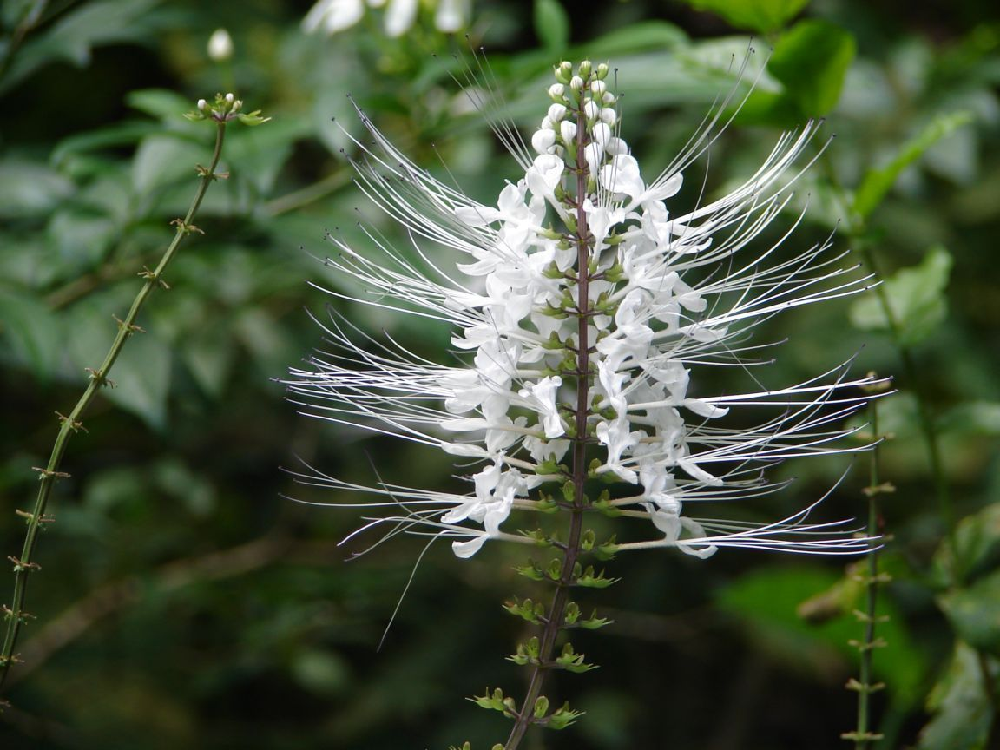

|
|
Home About Us Support Us Contact Us |
Kumis kucingKumis kucing adalah tumbuhan semak yang banyak ditemukan di Asia Tenggara, terutama negara-negara beriklim tropis. Manfaat kumis kucing yang paling berkhasiat adalah daunnya, karena mengandung kadar kalium yang tinggi, glikosida orthosiponin yang bagus untuk menurunkan kadar asam urat, fosfat, dan oksalat dari dalam tubuh. Manfaat daun kumis kucing juga sudah terbukti untuk penyembuhan infeksi kandung kemih, membersihkan empedu dan ginjal, menyembuhkan rematik, menjaga tekanan darah, diabetes dan asam urat. Tak hanya itu, khasiat kumis kucing ternyata sangat banyak. Manfaat Kumis Kucing untuk Berbagai PenyakitSelain bermanfaat menyembuhkan infeksi kandung kemih hingga asam urat, berikut ini manfaat kumis kucing untuk mengatasi berbagai penyakit: 1. Membantu masalah pernapasanManfaat kumis kucing memberikan harapan besar dalam mengobati masalah pernapasan seperti asma dan batuk. Untuk membuatnya efektif melawan menangkal masalah pernapasan, ramuan obat ini sering dicampur dengan herbal kuat lainnya yang bertindak sangat baik terhadap masalah pernapasan. 2. Mengurangi tekanan darah tinggiManfaat kumis kucing membantu mengurangi tingkat tekanan darah karena kandungan bahan kimia yang ada di dalamnya. Beberapa percaya bahwa tindakan anti-oksidan dan anti-inflamasi dari ramuan adalah alasan untuk manfaat ini. Metilripariokromen yang terkandung dalam ramuan kimia dapat menurunkan tekanan darah sistolik pada tikus. 3. Mengatasi sesak napasKumis kucing adalah ramuan yang luar biasa dengan banyak khasiat, ini adalah salah satu ramuan terbaik yang tersedia di dunia. Manfaat daun kumis kucing lainnya termasuk mengobati sesak napas dan masalah terkait saraf. Satu-satunya hal yang harus diperhatikan sebelum menggunakan ramuan ini adalah dosisnya yang harus diperiksa secara hati-hati sebelum dikonsumsi. Karena dosis yang berlebihan mungkin memiliki beberapa efek berbahaya bagi tubuh kita. 4. Pencegah pertumbuhan jamurManfaat kumis kucing dapat membantu mencegah pertumbuhan parasit dan inang asing (jamur) yang hidup di tubuh karena kandungan senyawa di dalamnya. Mereka melakukannya dengan memotong rantai suplai nutrisi dari jamur. Oleh karena itu kumis kucing dapat diterapkan ke area di mana infeksi jamur telah terinfeksi. 5. Tindakan diuretikIstilah ‘diuretik’ mengacu pada zat yang membantu meningkatkan aliran urine. Diperkirakan bahwa sinensetin dan tetramethoxy-flavon yang ada dalam ramuan ini membantu meningkatkan aliran urine dengan merelaksasi otot-otot dinding pembuluh internal. Tindakan diuretik dari ramuan ini juga dapat dikaitkan dengan Methylripariochromene A. Dalam sebuah penelitian yang dilakukan pada tikus hyperuricemic, manfaat daun kumis kucing juga dapat mengurangi kadar serum urat. Hasilnya menunjukkan efek diuretik dan hypouricemic dari ramuan ini (yang diuji pada tikus). 6. Menyembuhkan masalah kandung kemihKarena kumis kucing dapat membersihkan traktat dan memudahkan sistem kerjanya, manfaat kumis kucing sangat efektif dalam melawan infeksi di kandung kemih dan juga mencegah masalah kandung kemih terjadi di masa depan. 7. Gangguan ginjalKumis kucing juga populer disebut sebagai tanaman ginjal, mungkin karena memiliki khasiat untuk ginjal. Di Pulau Jawa, kumis kucing diyakini dapat secara efisien menghilangkan batu ginjal (hingga ukuran 5 cm). Manfaat kumis kucing ini telah diverifikasi dalam beberapa penelitian klinis juga. Ramuan ini digunakan untuk mengobati infeksi ginjal akut dan kronis, infeksi kandung kemih, infeksi saluran kemih, sering buang air kecil dan batu kandung kemih. 8. Bagus untuk detoksKumis kucing telah dikonsumsi di Pulau Jawa sejak dahulu begitu juga disebut sebagai Teh Jawa, alasan orang Jawa mengonsumsi ramuan ini adalah karena sifat pembersihannya. Manfaat daun kumis kucing bertindak sebagai pembersih alami dan karena itu menyapu tubuh kita dari racun yang tidak diinginkan dan bahan asing. 9. Mengontrol diabetesManfaat kumis kucing juga ajaib untuk mengobati gula darah, beberapa penelitian ilmiah menunjukkan bahwa kumis kucing secara efektif mengatur kadar glukosa dalam gula dan dengan demikian membantu kita mengendalikan diabetes secara efisien. Perlu dicatat bahwa seseorang harus berkonsultasi dengan dokter sebelum beralih sepenuhnya ke obat herbal ini. 10. Menurunkan berat badanManfaat kumis kucing telah ditemukan untuk membantu mengurangi berat badan. Karena nilai pasarnya sebagai ramuan obat yang juga memiliki kelebihan dari penurunan berat badan, kumis kucing dijual di pasar dalam berbagai bentuk seperti pil, kantong teh dan ekstrak. Efek Samping Kumis KucingReaksi alergi dari kumis kucing masih diragukan. Asupan teh kumis kucing untuk jangka panjang mengurangi kadar natrium dalam tubuh. Para wanita hamil harus menghindari mengonsumsi ramuan kumis kucing. Untuk kumis kucing cara penyajiannya adalah sebagai ramuaan/jamu | |
 © Healty © Healty |
|